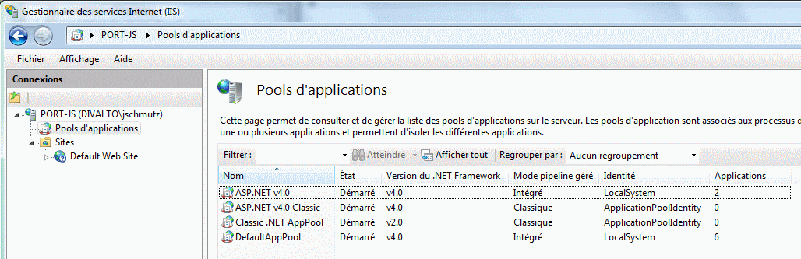
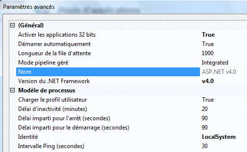
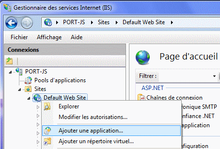
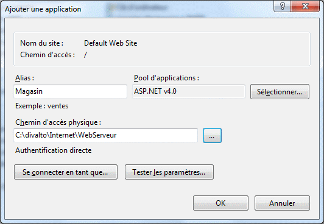

Pour qu’une page (fichier .aspx, .asmx ou .html) de votre serveur soit accessible depuis le Web, il faut créer une application IIS 32 bits pointant le répertoire contenant cette page. On crée ainsi un répertoire virtuel, alias d'un chemin dans l’arborescence des fichiers du serveur.
Exemple :
Pour accéder à votre application via l'URL http://www.monserveur.fr/magasin/commande.aspx, créez sur le serveur une application IIS nommée "Magasin" et pointant (par exemple) le répertoire "c:\Divalto\Internet\WebServeur" ; placez dans ce répertoire la page Commande.aspx (créée à partir de la page générique fournie par Divalto).
Pool d'applications IIS
Une application IIS appartient toujours à un pool d'applications. Il est possible de créer son propre pool d'applications ou utiliser l'un des pools proposés par Windows :

Configurer le pool d'applications
Cliquez sur la ligne Pools d'applications dans l'arbre des Connexions.
Dans la fenêtre Pools d'applications (à droite de l'écran), sélectionnez le pool choisi pour votre application puis éditez ses paramètres avancés. Les options suivantes sont impératives :
Activer les applications 32 bits (si votre système Windows est un système 64 bits) : True.
Mode Pipeline géré : Integrated (Intégré).
Version du .Net Framework : 4.0 minimum.
Identité : LocalSystem. 
Créer l'application IIS
Développez la branche de l’arbre correspondant au site Web souhaité (remarque : sous certains systèmes, il ne peut exister qu’un seul site Web, nommé "Default Web Site" - "Site Web par défaut").
Cliquez avec le bouton droit de la souris sur le nom du site et sélectionnez le choix du menu "Ajouter une application..." :

Entrez le nom de l’alias (Magasin dans notre exemple), pointez le répertoire physique (c:\Divalto\Internet\WebServeur dans notre exemple) qui contiendra la page aspx (Commande.aspx dans notre exemple) et spécifiez le pool d'applications choisi :

Remarque : Vous pouvez créer autant d'applications IIS que vous le souhaitez.